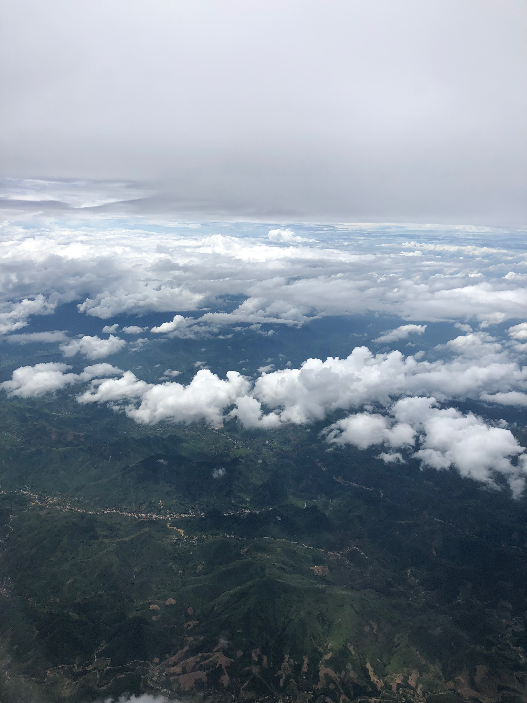
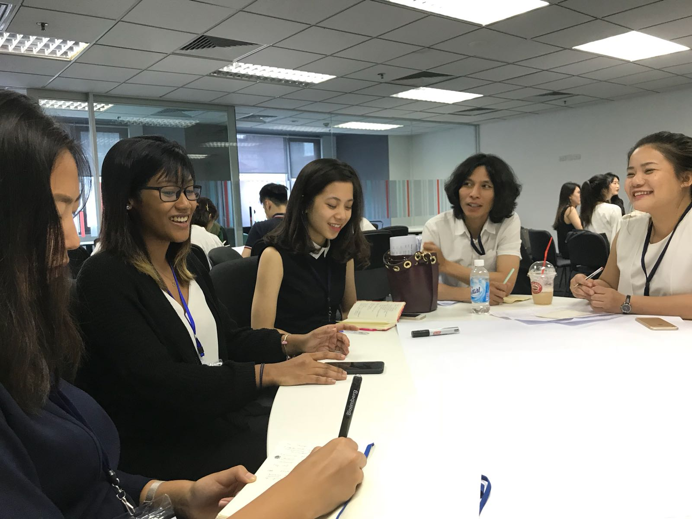

The Journey
This website/(blog) is dedicated to document and reflect my time in Hanoi, Vietnam.
Prior to the trip, I asked myself what does it take to be an effective global leader? Do you have to be assertive? Do you have to have all the best ideas? How much should you contribute? How do you ensure you’re leading in the right direction? How do you set the right tone/environment for your team? What if there are conflicts?
Whilst these thoughts were whizzing through my mind, I explored the different thoughts and opinions of those who I thought were examples of effective global leaders (or those who I aspired to be more like as a leader). My search to find the perfect leader or formula for an effective leader ranged from Pope Francis to Oprah Winfrey, Barack Obama to Tim Cooke. Although I didn’t find the perfect formula, my efforts did not go wasted as I observed that in one way or the other a combination of IQ, EQ and CQ was always present in all these leaders.
IQ, EQ and CQ
We are all familiar with the term IQ – intelligence quotient – defined simply as the total score derived from several standardized tests designed to assess human intelligence.
Emotional intelligence is a term many of us are becoming more and more aware of, a little more difficult to define but scholars and individuals have concluded that EQ is “the capacity to be aware of, control and express one’s emotions, and to handle interpersonal relationships judiciously and empathetically”.
Combining IQ and EQ an individual can be an effective leader – perhaps a decade (or two) ago. In an ever increasingly globalising world where communities are becoming more and more diverse a new strand of intelligence is essential for colleagues, neighbours and friends to work and live cohesively, understanding and accepting each other. Hence, the importance of CQ – cultural intelligence. The hardest to define from the three as the definition of cultural intelligence may vary for each person. For me, cultural intelligence is the ability to connect and understand the behaviours/cultures of individuals, near or far, and work effectively across these cultures/’barriers’.
Living in a diverse city such as London, and also coming from a non-British background – cultural intelligence has been an important aspect/attribute of my life growing up (whether I was aware of it or not). Being accepting of different cultures (rather than tolerant) and understanding that some people may act a certain way due to their culture allowed me to connect to others at a deeper level which enabled a better working, studying or living environment. However, I was never fully aware that I had been developing my cultural intelligence.
The Trip
Conscious of the importance of CQ, I cautiously reached Heathrow Airport (an hour earlier than the set time) eager and (nervous) to start this journey with 25 other just as eager students (but thankfully with the support of Aliya!).

As I sat on the plane ready to taxi off, I concluded that my main goals for the trip were to:
1. Develop my leadership skills by pushing myself out of my comfort zone
2. Make new friends/expand my global network
3. Gain independence and immerse myself in a completely foreign environment
With this as my final thoughts before departure, my journey kicked off with a 6 hour ‘nap’ followed by another 6 hour ‘nap’ on the second flight. With a total of 12 hours of ‘napping’ I arrived in Vietnam ready to rock ‘n’ roll!
From the very first day in Hanoi, I felt as though I had already started to achieve some of my goals! I had made some wonderful friends from the programme, and had also embraced the weather, the food and egg coffee!

The excursion on the second day provided us with an insight to the serene beauty that surrounded the hustle and bustle of Hanoi but also, into the life of locals and the history of Vietnam. I found this to be most useful, as we were able to compare our own lives in London to those in Hanoi or Ninh Binh! Whether it was the food we ate, the contrast in wages, the history – all helped me to further understand the people that I engaged with during the trip.
The Challenge
The third day was kickstarted by a hearty breakfast and a group walk to the RMIT Hanoi campus. I had promised myself that, because this was such an incredible opportunity and I had travelled almost 5800km, I would push myself out of my comfort zone to make new friends, answer questions, put my hand up to contribute to discussions! Throughout all the discussions and group work, building a relationship with fellow participants was surprisingly easy as we all had different insights but also, we were able to find common ground and connect as well.
Appreciation of cultural intelligence was a common thread amongst all of us. Particularly during activities where our fundamental instinctive thoughts were questioned, we were able to see the perspective from our team members which in turn altered our perception on the subject or completely changed our view. I found this most interesting as having an openness to be able to accept the views of others despite not sharing the same views demonstrated a cohesive environment – rather than disregard.
Throughout the four days, we as a group were put in situations where we had no clue where to start, including the challenge that was set upon us ‘How do you make a smart city inclusive?’. It was initially difficult for me comprehend this challenge as I had no idea how to tackle such a huge global issue. Hour by hour, though, we were able to take this huge challenge and break it down to manageable chunks. Good leadership and coordination/allocation of tasks was important when tackling a broad topic such as this, as it was very easy to diverge and go on tangent. This was where the different types of leaders was particularly useful, as some members of the group lead the discussion, others were able to sit and observe to provide meaningful and targeted feedback.
Overall, my proudest moment from our group challenge was during our team work sessions. Everyone was able to respect the opinions and suggestions set out and take it further by building on these ideas. I was able to push myself to take lead and take initiative during certain stages by consolidating our thought process, ensuring all members of the team were able to contribute and be engaging and energetic when the team needed a boost!

A particularly striking moment was also the most challenging for me, as mentioned above, I tried to ensure that everyone was able to contribute and encouraged those to do so. Other than the odd “what do you think, XXX?”, I found that being sincere and targeted with my questions was much more effective to have someone open up and allow their contribution. Asking the right questions when receiving from mentors and observers were also a highlight moment as this could lead the group to a much more targeted thought chain!
As this whirlwind of a trip, came to an end on the final day. Our creative juices were flowing right to the very end! An overwhelming sense of emotion struck us all as we had firstly, made such great friends despite coming from completely different cultures and backgrounds but secondly, we had all progressed and grew as leaders!

The end game
As we etched closer to Heathrow airport, flying over my wonderful city London, I reflected on the past week. Had I achieved the goals that I had set out at the beginning of the trip? The goals set out all those weeks ago and had been stored safely away by Aliya? YES!